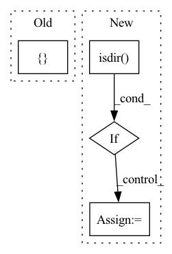

Pattern ID :30475
Before Change
with torch.no_grad():
outputs = self.single_image_forward(frame)
vis_dict = {"image_org": outputs["meta_data"]["image_org"].cpu()}
single_batch_results = self.reorganize_results(outputs,[ os.path.basename(video_file_path)+"_"+str(frame_id)After Change
video_basename = get_video_bn(video_file_path)
print("Processing {}, saving to {}".format(video_file_path, self.output_dir))
os.makedirs(self.output_dir, exist_ok=True)
if not os.path.isdir( self.output_dir) :
self.output_dir = video_file_path.replace(os.path.basename(video_file_path),"")
results, result_frames = {}, []
for frame_id in range(video_length):In pattern: SUPERPATTERN
Frequency: 4
Non-data size: 4
Instances Fragment ID: 90158566
Project Name: arthur151/romp
Commit Name: 7ced2a06171dfb871af78ce5467503166821dc9a
Time: 2021-04-20
Author: yusun@stu.hit.edu.cn
File Name: src/core/test.py
M Class Name: Demo
N Class Name: Demo
M Method Name: process_video(2)
N Method Name: process_video(2)
M Parent Class: Base
N Parent Class: Base
M File Name: src/core/test.py
N File Name: src/core/test.py
M Start Line: 104
M End Line: 121
N Start Line: 96
N End Line: 128
Before Change
def load_returns_100_data(runs_dir):
data = {}
def add_data(agent, env, file):
if not env in data:
data[env] = {}After Change
// list of experiments
for exp_info in os.listdir(runs_dir):
exp_info_path = os.path.join(runs_dir, exp_info)
if os.path.isdir( exp_info_path) :
// list of environments
for env in os.listdir(exp_info_path):
env_path = os.path.join(exp_info_path, env)
if os.path.isdir(env_path):
// list of agents
for agent_dir in os.listdir(env_path): Fragment ID: 90158565
Project Name: syuntoku14/pytorch-rl-il
Commit Name: 202c291db88908eb570e4c1696752843f97db88e
Time: 2020-04-12
Author: syuntoku14@gmail.com
File Name: rlil/utils/plots.py
M Class Name: AnonimousClass
N Class Name: AnonimousClass
M Method Name: load_returns_100_data(1)
N Method Name: load_returns_100_data(1)
M Parent Class:
N Parent Class:
M File Name: rlil/utils/plots.py
N File Name: rlil/utils/plots.py
M Start Line: 20
M End Line: 38
N Start Line: 31
N End Line: 56
Before Change
self.frames_size = frames_size
// video buffer
self.video_buffer = {}
// load video frames into memory and resize
// self.video2frames = {}
// for video_path in tqdm(self.video_paths, desc="loading videos"):After Change
self.frames_size = frames_size
// load video
if os.path.isdir( video_dir) :
make_video_buffer(plb.Path(video_dir).rglob("*.mp4"),
save_path=buffer_save_path,
frames_num=frames_num,
frames_size=frames_size,
compress=True)
self.video2data = np.load(buffer_save_path)
elif os.path.isfile(video_dir):
self.video2data = np.load(video_dir)
logger.info("successfully loading {} videos".format(len(self.video2data))) Fragment ID: 90158563
Project Name: kamino666/video-captioning-transformer
Commit Name: 22bb2cb5e650b1857dd2790720a952496c9f0f23
Time: 2021-09-15
Author: 516015417@qq.com
File Name: dataloader.py
M Class Name: MSR_VTT_VideoDataset
N Class Name: MSR_VTT_VideoDataset
M Method Name: __init__(8)
N Method Name: __init__(5)
M Parent Class: Dataset
N Parent Class: Dataset
M File Name: dataloader.py
N File Name: dataloader.py
M Start Line: 35
M End Line: 53
N Start Line: 28
N End Line: 70